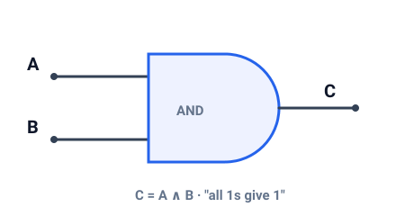

LiveDeck turns a plain HTML page into full-screen slides: content on the left, media on the right, everything scaled to fit.
Move with ← → · press G for the overview.

Add the stylesheet in <head> and the script at the end of
<body>. There is no build step.
Then describe the deck with a config element and a template. Each
.slide-source is one step; [data-content] is the left column and
[data-media] the right.
Put an <img> in [data-media]. It is scaled to fit and opens
in a lightbox when clicked.
This slide's media is exactly that image — try clicking it.
Any page can be embedded with an <iframe> — a simulator, a demo, a
widget. Give it a unique data-live-id:
For auto-sizing, add one line to the embedded page:
Add several media items — they are arranged in equal cells and all scaled to fit.
The same page can be embedded many times — just use different
data-live-id values.
Navigation, the overview and fullscreen are built in.
| Key | Action |
|---|---|
→ / Space |
Next |
← |
Previous |
G / Esc |
Overview |
F |
Fullscreen |
Swipe left/right on touch devices.
Set the accents in the config, or override the CSS variables in
livedeck.css:
Translate the UI by extending LiveDeck.i18n:
That's the whole API — the full reference is in the README.